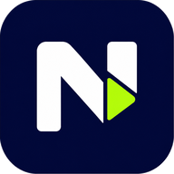

NEWLAND STUDIO SUITEInformativa sulla privacy
Vale per NWLcut e NWLtono, sia installati dal sito sia dal Microsoft Store. Ultimo aggiornamento: 24 novembre 2026.
I tuoi file restano sul tuo dispositivo
Video, audio, immagini e progetti vengono elaborati sul tuo computer o telefono. Non li carichiamo su nessun server e non li vediamo.
Dati che non raccogliamo
Le app non chiedono registrazione, non usano account, non mostrano pubblicità e non contengono sistemi di tracciamento o statistiche.
Microfono
NWLtono usa il microfono solo quando premi il pulsante di registrazione. L'audio registrato resta nel progetto, sul tuo dispositivo.
Connessione a internet
Serve solo per alcune funzioni facoltative: scaricare i caratteri tipografici, il modello per i sottotitoli automatici (la prima volta che li usi) e, per Grandangolo, logo e chiusura del video. Queste richieste non contengono i tuoi file né dati personali.
Contatti
Per domande: grandangoloagrigento@gmail.com